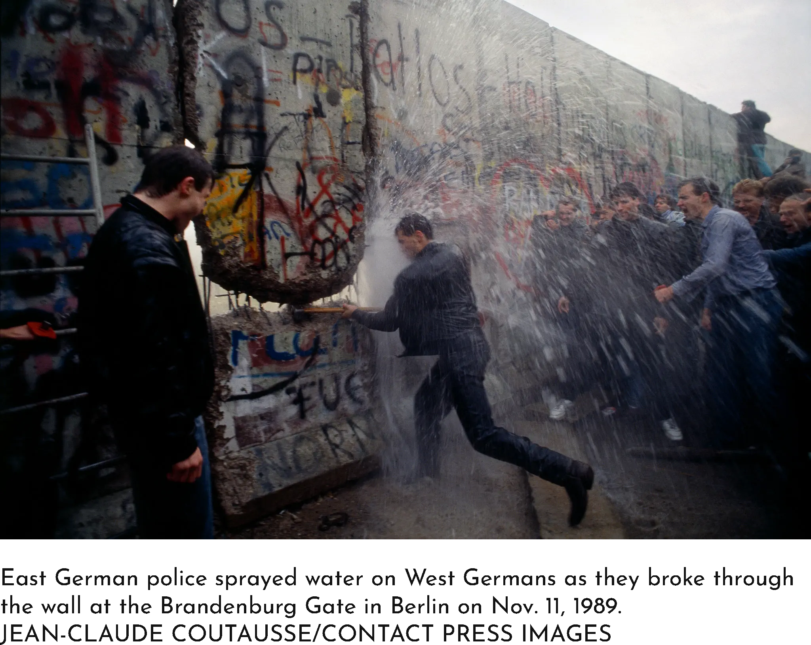

☰ Menu
Why did The Berlin Wall fall?
Only a day after The Berlin Wall was put up people were
outraged, and protests started immidately. People started
to take down the wall themselves, to crowd city buildings,
and cause overall civil unrest to express their dissatisfaction
with the wall. These protests were the main way that people
tried to invoke change within their government, and they
worked to an extent. The protests kept a constant pressure
on the government to bring change and to remove the wall.
Although these protests may have not made the government
revert the wall immidately, they ultimately lead to the
deconstruction of the wall, and inturn end of the Cold
War.


Another key contributer to the demolition of The Berlin Wall
was Hungary. In september, 1989, Hungary made the first cracks
in the iron curtain, they opened their borders to east germans
and lifted travel restrictions into Austria. On the surface this
seems very trivial, however, this change allowed for east germans
to go into Hungary, which they had easy access to, and then
easily migrate to the west with relatively low interference.
This was the start of revolution, a wake up call to the Soviet
Union that their communist government would stand no longer.
Ultimately, this change demostrated that outside governments
were in opposition of the wall and did not find it right to
cage in east Germans like animals. Changes and signs of support
like these are what lead to The Berlin Wall being taken down two
months later.

On November 9, 1989, The Berlin Wall fell. At a press
confrence an east German spokes person announced that the
traveling restirctions from east to west Berlin would be loosened,
but failed to clairfy that restirctions would remain in place.
News outlets quickly picked up on this and reported the incorrect
news that the wall was coming down. This sparked celebration in
Berlin, and people quickly gathered at the wall to tear it down.
Despite the east German governemnt not wanting the wall to
be deconstructed, passport checks were forgotten and the border
was traversed freely. This not only marked the end of an era in
Germany and the start of reunification, but also the end of the
Cold War.